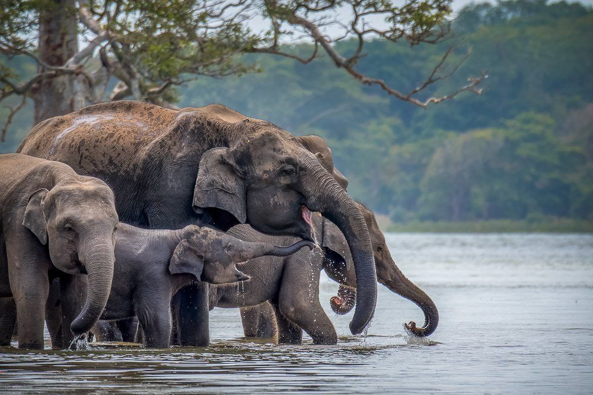

Experience the world's largest gathering of Asian elephants in their natural habitat.
Located in the North Central Province of Sri Lanka, Minneriya National Park is a major destination for wildlife enthusiasts. During the dry season (June to September), hundreds of wild Asian elephants congregate around the ancient Minneriya tank to graze on fresh grass as the water recedes from the reservoir's banks.
This natural phenomenon, famously known as "The Gathering," is one of the most spectacular wildlife sights in the world and is often cited by safari enthusiasts as a "bucket list" experience. Aside from elephants, the park is home to leopards, sloth bears, spotted deer, and a vast array of birdlife, including pelicans and painted storks.
Back to Sigiriya Hub